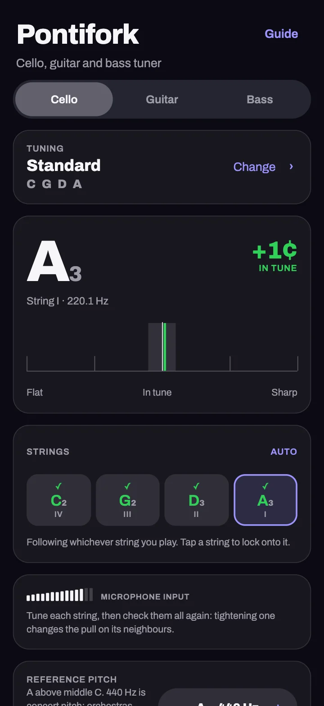
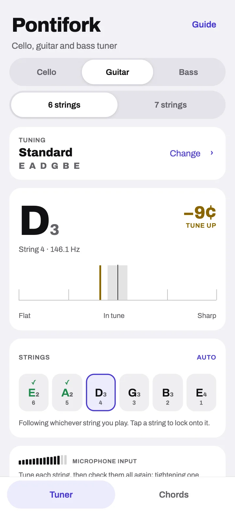
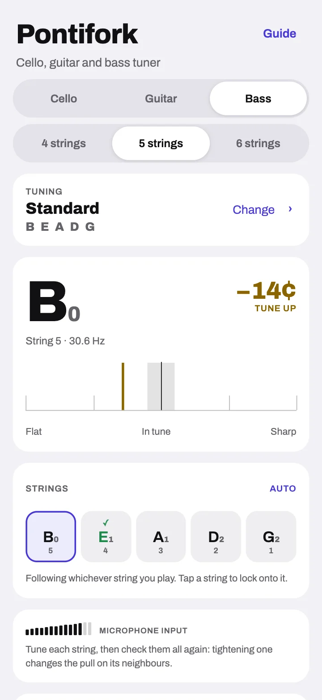

Cello, guitar and bass
The pitch engine that never mistakes a low C
Pontifork listens with Ponticello’s dual-rate engine, built for an instrument whose lowest note the body barely radiates — and widened to reach a five-string bass in drop A at 27.5 Hz and a guitar’s twelfth fret. It judges octaves by the period, not the loudest harmonic, so a low string is never read an octave up and a high one never an octave down.


